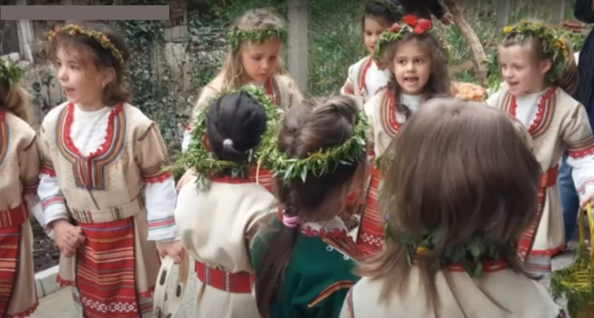
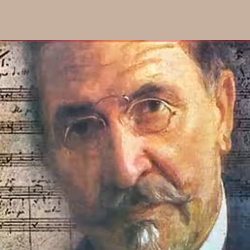
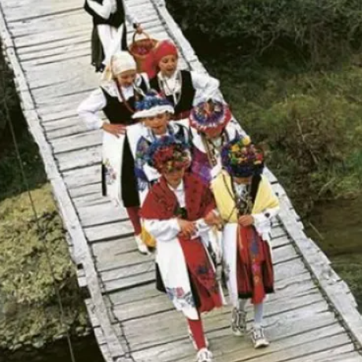

2 Oj, ubava, mala momo
Oh, gentille petite fille
(Trinaesta Rukovet - 13ème guirlande :02:55 - 03:52 )

|
|
|
|
|
 1. Version Mokranjac XIIIa Rukovet |
 2. Etudiants du Conservatoire de Belgrade: обÑедна кÑаÑиÑка пеÑма |
 3. Bela zora zazorila Peva: Vasilija RadojÄiÄ |
 4. LazariÄka pesma ÑÑаÑа дама ÑеÑиÑÑÑе |
 Oj Lazare lazare бÑгаÑÑка пеÑма |
 5. Oj Lazare a gde Ðева ÐеÑа СÑÐ¾Ð»Ð¸Ñ (extrait) |
NOTES
|
[1] ÐÐÐÐÐ ÐЦРРÐÐ ÐÐÐЦРÐÐ²Ñ Ð¿ÐµÑÐ¼Ñ ÐµÑномÑзколози ÑвÑÑÑаваÑÑ Ð¼ÐµÑÑ âÑвеÑолазаÑÑке пеÑмеâ или âÐазаÑиÑеâ и Ñ Ð¿Ð¾ÑÐµÐ±Ð½Ñ ÐºÐ°ÑегоÑиÑÑ, "пеÑме и игpe кÑаÑиÑa" или âкÑаÑÑке пеÑмеâ. СÑога Ñе неопһодно обÑаÑниÑи ова два поÑма. [2] ÐÐ ÐÐСÐE ÐÐСÐÐ Ð ÐÐÐ Ð ÑÑ Ð½Ð°Ñодне обиÑаÑне пеÑме Ñ Ð¿Ð¸ÑоÑÑком кÑаÑÑ ÐºÐ¾Ñе ÑÑ Ð²ÐµÐ¾Ð¼Ð° ÑÑодне Ñа лазаÑиÑким обиÑаÑним пеÑмама, коÑе Ñе певаÑÑ Ñ Ð´ÑÑгим кÑаÑевима СÑбиÑе и коÑе Ñе код ÐÑка ÐаÑаÑиÑа називаÑÑ ÐºÑаÑиÑким пеÑмама ÐÑаÑÑке пеÑме пева о ÐÑÑ Ð¾Ð²Ð¸Ð¼Ð° гÑÑпа од оÑам девоÑака, од коÑÐ¸Ñ Ñе пÑва, обÑÑена Ñ Ð¼ÑÑко одело и Ñа ÑабÑом Ñ ÑÑÑи назива кÑаÑ, дÑÑга Ñе кÑаÑиÑа, а оÑÑале ÑÑ Ð±ÐµÐ· поÑÐµÐ±Ð½Ð¸Ñ Ð½Ð°Ð·Ð¸Ð²Ð°. Ðве пеÑме изводе девоÑке певаÑÑÑи и игÑаÑÑÑи, на ÑлиÑан наÑин игÑи лазаÑиÑа, идÑÑи по ÑÐµÐ»Ñ Ð¾Ð´ кÑÑе до кÑÑе. ÐÐ¸Ñ Ð¾Ð²Ð° игÑа Ñе ÑазликÑÑе од лазаÑиÑа, по Ñоме ÑÑо, док игÑа, кÑÐ°Ñ Ð´Ñжи Ñ ÑÑкама ÑздигнÑÑÑ ÑабÑÑ, Ñоме ÑпÑавÑа игÑом и показÑÑе пÑÐ°Ð²Ð°Ñ ÐºÑеÑаÑа игÑаÑа. ÐÑаÑÑке пеÑме ÑÑ ÐºÑаÑке, а певаÑÑ Ñе Ñвек на иÑÑÑ Ð¼ÐµÐ»Ð¾Ð´Ð¸ÑÑ. У ÐÑжниÑи од 17 Ð·Ð°Ð±ÐµÐ»ÐµÐ¶ÐµÐ½Ð¸Ñ Ð¿ÐµÑама, ÑеÑÑнаеÑÑ ÑÑ Ñ ÑедмеÑÑÑ, а ÑÑи Ñ Ð¾ÑмеÑÑÑ (од ÑÐ¸Ñ Ð´Ð²Ðµ ÑÑ Ð¿Ð¾Ñеклом кÑаÑиÑке Ñа пÑипевом ладо, ладо). ÐÑаÑÑке пеÑме ÑÑ Ð½Ð°Ð¼ÐµÑене Ñлановима домаÑинÑÑва, али и домÑ, имаÑÑ, ÑÑоÑи. Свака Ñе пеÑма завÑÑава ÑеÑÑÑ âÐадо, Ðадо!â и наÑвеÑоваÑниÑе пÑедÑÑавÑа оÑÑаÑак од имена Ðаде, богиÑе ÑÑбави Ñ ÑловенÑÐºÐ¾Ñ Ð¼Ð¸ÑологиÑи, (пÑе него ÑÑо бÑде аÑÑомобил!) У "кÑаÑÑким пеÑмама" као и Ñ "лазаÑиÑким пеÑмама", иÑказÑÑÑ Ñе жеÑе да ономе коме ÑÑ Ð¸Ð»Ð¸ ÑÐµÐ¼Ñ ÑпÑÑене Ñве бÑде здÑаво и ÑÑеÑно, Ñве Ñодно и плодно. ÐедÑина и опÑимизам коÑи зÑаÑе из Ð¾Ð²Ð¸Ñ Ð¿ÐµÑама благоÑвоÑно делÑÑÑ Ð½Ð° ÑÑде, Ñе Ð¸Ñ Ñадо ÑлÑÑаÑÑ, а позиÑивна Ñ Ð¸Ð¿ÐµÑбола Ñе Ñедна од ÑÐ¸Ñ Ð¾Ð²Ð¸Ñ Ð½Ð°ÑÑеÑÑÐ¸Ñ Ð¿Ð¾ÐµÑÑÐºÐ¸Ñ ÑигÑÑа [3] ÐÐÐÐÐ ÐЦE ÐбÑедна игÑа гÑÑпе девоÑака (лазаÑке), везана за пÑазник ваÑкÑÑеÑа ÐазаÑевог, одÑжава Ñе Ñ Ð¿ÑолеÑе као и кÑаÑиÑе, и Ñа многим иÑÑим елеменÑима. ÐеÑме за плодноÑÑ, ÑÑеÑÑ Ð¸ напÑедак намеÑене ÑÑ Ð¼Ð¾Ð¼Ñима, девоÑкама, ÑдовиÑама, ÑобанинÑ, понекад и покоÑникÑ, заÑим поÑединим живоÑиÑама (коÑÑ, ÑвиÑи, кокоÑки), виногÑадÑ, водениÑи и Ñл. ÐÑÐ¾Ñ ÑÑеÑниÑа ваÑиÑа Ñ Ñазним кÑаÑевима (од 6 до 12), а поÑед ÐазаÑа и ÐазаÑиÑе, ÑÑеÑÑвÑÑÑ Ð¿ÑедÑаÑке и кÑоÑÑаÑке, коÑе ноÑе коÑаÑиÑÑ (âкÑоÑÑÑ") Ñа ÑвеÑем и ÑкÑпÑаÑÑ Ð´Ð°Ñове. У лазаÑиÑе Ð¸Ð´Ñ Ð´ÐµÐ²Ð¾Ñке ÑдаваÑе, али и млаÑе , Ñа извеÑним ÑÑаговима иниÑиÑаÑиÑе, ÑÐµÑ Ð´ÐµÐ²Ð¾ÑÑиÑа коÑа пÑви пÑÑ Ð¸Ð³Ñа наÑÑÑпа поÑледÑа, дÑÑги пÑÑ ÐºÐ°Ð¾ пÑедÑиÑа, а ÑÑеÑи пÑÑ ÐºÐ°Ð¾ женÑки или мÑÑки лазаÑ. Ðеке пеÑме, као и кÑаÑиÑке, изÑажаваÑÑ Ð¶ÐµÐ½ÑÐºÑ Ð¸Ð½Ð¸ÑиÑаÑÐ¸Ð²Ñ Ð·Ð° бÑак: â ÐоÑе, момÑе намеÑниÑе,/ коÑÑ Ð²Ð¾Ð»Ð¸Ñ Ð´Ð° намеÑиÑ. или: âÐоÑе, момÑе, младо момÑе, /како Ð¼Ð¾Ð¶ÐµÑ Ñам да ÑпиÑеÑ/ Ñ ÐºÑевеÑе без девоÑÑе?" Ðа ÑÑ Ð»Ð°Ð·Ð°ÑиÑе пÑвобиÑно пÑедÑÑавÑале заÑвоÑене гÑÑпе, коÑе ÑÑ Ñе пÑиликом ÑÑÑÑеÑа могле и поÑÑÑи, као гÑÑпе коледаÑа или две Ñвадбене повоÑке, показÑÑÑ Ð¾Ð²Ð¸ ÑÑиxови:: âСÑеÑоÑе Ñе лазаÑи./ Ðа ли да Ñе побиÑев,/ или да Ñе Ñазминев?â У неким Ñелима леÑковаÑке ÐоÑавиан недавно Ñе деÑавало да Ñе две гÑÑпе лазаÑиÑа пÑиликом ÑÑÑÑеÑа поÑÑкÑ, а локалиÑÐµÑ ÐазаÑов забел, по наÑодном казиваÑÑ, ознаÑавао би меÑÑо где ÑÑ Ð¿Ð¾ÐºÐ¾Ð¿Ð°Ð½Ðµ изгинÑле лазаÑиÑе. ÐаÑвоÑени каÑакÑÐµÑ Ð¶ÐµÐ½Ñке гÑÑпе, женÑка иниÑиÑаÑива за бÑак и обиÑÐ°Ñ Ð´Ð° понекад лазаÑке ÑÑеÑÑвÑÑÑ ÐºÐ¾Ð»ÐµÐºÑивно Ñ Ð¶ÐµÑви показÑÑÑ Ð´Ð° и лазаÑиÑе, као и кÑаÑиÑе, пÑвобиÑно поÑиÑÑ Ð¸Ð· маÑÑиÑаÑалне кÑлÑÑÑе, као пÑедÑÑавниÑе ÑÑмÑкиһ демона. [4] ÐÐÐÐÐ ÐÐРСУÐÐТРje пÑолеÑна ÑвеÑаноÑÑ ÑоÑи ЦвеÑне недеÑе Ñ ÐÑÑоÑним ЦÑквама. У гÑадовима СÑбиÑе деÑа Ð¸Ð´Ñ ÑвеÑано Ñ Ð¿Ð¾Ð²Ð¾ÑÑи Ñ Ð²ÑбиÑама, коÑе добиÑаÑÑ Ñ ÑÑкви, и звонÑима, певаÑÑÑи о ÑÑкÑÑнÑÑÑ ÑвеÑога ÐазаÑа. ÐбиÑÐ°Ñ Ð¿Ð°Ð³Ð°Ð½Ñки Ñе кÑлÑно Ñздигао, ÑимболиÑÑÑи долазак пÑолеÑа. ÐÑимиÑивни облик обиÑаÑа изгледао Ñе овако: неколико девоÑÑиÑа, âлазаÑиÑаâ, âлазаÑкиâ, окиÑениһ вÑбовим гÑанÑиÑама, Ñ Ð¿ÑаÑÑи одÑаÑлог деÑака, Ð¸Ð´Ñ Ð¾Ð´ кÑÑе до кÑÑе, игÑаÑÑ Ð¸ певаÑÑ Ð¿ÐµÑме намеÑене домаÑÐ¾Ñ ÑеÑади . (ÐладиÑÑ Ñе пева:) Ðладо момÑе коÑа ÑпÑема, ладо, ладо, (âладо" Ñе понавÑа Ñз Ñваки ÑÑиһ) коÑа ÑпÑема, ÐºÐ¾Ñ Ð¼Ñ Ð¿Ð¾Ð´Ð¸Ð³Ñава, Ñедло меÑе, Ñедло Ð¼Ñ Ñе кÑеÑе. Ðледала га из гÑада девоÑка: ,.ÐледаÑ, маÑко, лепога ÑÑнака, не биһ знала ÑÑа б' за Ñега дала: Ñве биһ моÑе дÑкаÑе Ñпопала, па биһ ÑÐµÐ¼Ñ Ñоке позлаÑила''.. (ЧобаниÑи Ñе пева:) "ÐÑ, овÑаÑко гиздава, ÑвоÑе ÑÑадо гиздаво,..". (ÐеÑа Цигана певаÑÑ:) "ÐгÑаÑ, игÑÐ°Ñ Ð»Ð°Ð·Ð°Ñке, голе, боÑе Циганке. Ðва кÑÑа богаÑа, има доÑÑа дÑкаÑа" â иÑд. ÐобиÑене намимниÑе лазаÑиÑе поделе. Узима Ñе да Ñе поÑеÑиваÑе кÑÑе на ÐазаÑÐµÐ²Ñ ÑÑбоÑÑ Ð½Ð°ÑÑало по наÑÐ¾Ð´Ð½Ð¾Ñ ÐµÑимологиÑи ÑеÑи ÐÐ°Ð·Ð°Ñ Ð¸ âлазиÑи" (пÑзиÑи), лазаÑиÑа и плазаÑиÑа (змиÑа). У ÐоÑни, ÑоÑи ÐазаÑеве ÑÑбоÑе паÑÑиÑи говоÑе Ñз лÑпаÑе Ñ Ð¼ÐµÑални пÑедмеÑ: âÐÑÑа, кÑÑа лазаÑиÑа, бÑеж' од кÑÑе плазаÑиÑа, бÑежи плазо од кÑÑе, ÑÐµÑ Ñе Ðазо код кÑÑе!" â или: âÐÑеж'Ñе, гÑÑе плазаÑиÑе, еÑо ÑвеÑе ÐазаÑиÑе!" ÐзвоÑ: Ш. ÐÑлиÑиÑ, Ð. Ð. ÐеÑÑÐ¾Ð²Ð¸Ñ Ð¸ Ð. ÐанÑÐµÐ»Ð¸Ñ (1970). ÐиÑолоÑки ÑеÑник. https://repkeetnolog.blogspot.com/2021/04/lazarice.html [5] ÐÐÐÐ ÐÐÐÐÐ ÐÐÐ ÐÐСÐÐ Ðа СÑбе име ÐÐ°Ð·Ð°Ñ Ð¿Ñизива и Ðнеза ÐазаÑa XÑебеÑановиÑa (1329-1389) погинÑо Ñ ÐоÑовÑком ÐоÑÑ (15. ÑÑна 1389). ÐÑавоÑлавна ÑÑква га поÑÑÑÑе као ÑвеÑог мÑÑеника кojи пÑазнÑÑе Ñе 15. ÑÑна. 1953. године подигнÑÑ Ñе Ñпоменик Ñ Ð²Ð¸Ð´Ñ ÐºÑле Ñ Ð·Ð½Ð°Ðº ÑеÑаÑа на биÑÐºÑ Ð½Ð° ÐоÑовoм ÐоÑÑ. ÐоÑи назив âÐазимеÑÑанâ, коÑи обÑедиÑÑÑе ÑÑÑÑки и ÑÑпÑки Ñезик и знаÑи âмеÑÑо xеÑоÑаâ. Ðело Ñе аÑxиÑекÑе ÐлекÑандÑа ÐеÑока. Ðа ÑÐ¿Ð¾Ð¼ÐµÐ½Ð¸ÐºÑ Ñе âÐазаÑева клеÑваâ, пÑипиÑанa ÐºÐ½ÐµÐ·Ñ ÐазаÑÑ: "Ðо Ñе СÑбин и ÑÑпÑкога Ñода, и од ÑÑпÑке кÑви и колена, а не доÑ'о на Ð±Ð¾Ñ Ð½Ð° ÐоÑово, не имао од ÑÑÑа поÑода, ни мÑÑкога ни девоÑаÑкога! Ðд ÑÑке Ð¼Ñ Ð½Ð¸ÑÑа не Ñодило, ÑÑÑно вино ни пÑениÑа бела! Ð Ñом капо док Ð¼Ñ Ñе колена!" Ðва клеÑва Ñе, Ñ Ð¾Ð²Ð¾Ð¼ обликÑ, пÑви пÑÑ Ð¿Ð¾ÑавÑaлa Ñ Ð¸Ð·Ð´Ð°ÑÑ âÐбоÑника наÑодниһ пеÑамаâ ÐÑка СÑеÑановиÑа ÐаÑаÑиÑа из 1845. године. Ðво не гаÑанÑÑÑе ÑÐµÐ½Ñ Ð°ÑÑенÑиÑноÑÑ: Ðд 1802, за поезиÑÑ, а од 1814, за Ñомане, па Ñве до ÑвоÑе ÑмÑÑи 1832, ÐалÑÐµÑ Ð¡ÐºÐ¾Ñ Ñе Ñ Ð½ÐµÐ¿Ñекидном ÑÐ¾ÐºÑ Ð¿Ñоизводио Ð¾Ð²Ñ Ð²ÑÑÑÑ "гоÑÑке" кÑижевноÑÑи, названe âТÑÑбадÑÑcкeâ, коÑа Ñе поÑлÑжила као ÑÐ·Ð¾Ñ Ð·Ð° виÑе пиcaÑa! Ðа ÐаÑаÑиÑеве ÑпиÑе Ñе позивало, Ñ Ð´ÑÑгим ÑлÑÑаÑевима, Ñа каÑаÑÑÑоÑалним поÑледиÑама. ÐадаÑмо Ñе да бÑде Ñаквa ÑÑдбинa поÑÑеÑена овде ÑиÑиÑанoj модеÑнoj âÐазаÑевoj пеÑмиâ! |
[1] [1] LAZARICE ET KRALJICE Cette chanson est classée par les ethnomusicologues parmi les "chansons de la saint-Lazare " ("Lazarice" ) et dans une catégorie particulière, les "chansons royales" ("Kraljice"). Il convient donc d'expliquer ces deux termes. [2] CHANSONS ET DANSES ROYALES Les chansons royales sont des chansons traditionnelles de la région de Pirot qui ressemblent beaucoup aux chansons traditionnelles lazariques des autres parties de la Serbie. La dénomination "chansons royales" est due à Vuk KaradžiÄ. Les chansons royales sont chantées à la Pentecôte par un groupe de huit filles, dont la première, vêtue d'un costume d'homme et tenant un sabre à la main, s'appelle le roi, la seconde est la reine. Les autres n'ont pas de nom particulier. Ces chants sont interprétés par les jeunes filles qui chantent et dansent, un peu comme dans la danse de Lazare, allant dans le village de maison en maison. Leur danse diffère de celle de Lazare en ce que, tout en dansant, le roi brandit son sabre et dirige la danse en indiquant la direction du mouvement des danseuses. Les chansons royales sont courtes et se chantent toujours sur la même mélodie. A Lužnica, sur 17 chansons enregistrées, 14 sont à sept temps et trois à huit temps (dont deux "royales" d'origine avec le bourdon "lado, lado"). Les chants royaux s'adaptent aux membres composant chaque maisonnée, tenant compte du bâtiment, des biens possédés et du bétail. Chaque chanson se termine par le mot « Lado, Lado ! » et est très probablement un vestige du nom de Lada, la déesse de l'amour dans la mythologie slave (avant d'être une automobile!) Dans les "chants royaux", comme dans les "chants lazariques", on souhaite à tous ceux à qui l'on s'adresse santé et bonheur, richesse et prospérité. La gaieté et l'optimisme qui se dégagent de ces chansons ont un effet bénéfique sur l'auditoire heureux de les entendre. L'hyperbole positive est l'une des figures poétiques les plus fréquentes auxquelles elles recourent.. [3] DANSE DE SAINT-LAZARE Danse rituelle exécutée par un groupe de jeunes filles (les "Lazarke"), à l'occasion de la fête de la résurrection de Lazare. Cela a lieu au printemps comme pour les "Kraljice" avec lesquelles elle partage plusieurs traits communs. Ce chant appelle fertilité, bonheur et succès sur les jeunes gens (garçons et filles), les veuves, les bergers, parfois même les défunts, ainsi que sur certains animaux (chevaux, porcs, poules), les vignes, les moulins à eau, etc. Le nombre de participantes varie selon les localités (de 6 à 12) et, en marge de la cérémonie religieuse et de la danse de saint Lazare, inerviennent des "prednjarke" (meneuses) et des "kroÅ¡njarke" qui portent des hottes ((âkroÅ¡nje") fleuries où elles recueillent des présents. Les "Lazarice" sont non seulement des jeunes filles en âge de se marier, mais aussi de plus jeunes, dans ce qui évoque un rite d'initiation, car les petites filles interviennent en dernier dans la première danse, puis une seconde fois comme meneuses de ronde et une troisième fois comme "Lazares" masculins ou féminins. Dans certaines chansons, comme c'est le cas pour les "kraljice", c'est la fille qui fait les avances: "Allons, garçon, toi qui es de passage / Choisis celle que tu emmènerast" ou bien "Allons, garçon, comment peux-tu dormir/ Seul dans ton lit et personne avec toi?" Les compagnies de "lazarice" constituaient à l'origine des groupes fermés qui à l'occasion de rencontres (entre groupes de "kolo" ou deux cortèges de noces) pouvaient aller jusqu'à s'affronter. En témoignent ces couplets: "Les Lazares se sont rencontrés/ Vont-ils s'entretuer /Vont-ils s'ignorer?" Dans quelques villages de la Moravie de Leskovac, il y a peu, il advint que deux groupes de lazarica, lors d'une rencontre se battirent, et la localité "Lazarov zabel", selon la tradition populaire, désignerait l'endroit où sont inhumées les lazarice qui moururent. Le caractère secret de ces sociétés feminines, l'initiative qui leur revient en matière matrimoniale et parfois leur participation collective aux moissons montre que les lazarice, tout comme les kraljice, procèdent à l'origine d'une culture matriarcale en tant qu'incarnations des démons sylvestres. [4] LE SAMEDI DE SAINT LAZARE est la célébration du printemps, la veille du dimanche des Rameaux dans les Eglises d'Orient. Dans les villes de Serbie, les enfants forment une procession solennelle et, portant les branches de saules qu'on leur a données à l'église et agitant des clochettes, ils chantent la résurrection de saint Lazare. C'est une tradition païenne érigée en acte liturgique qui symbolise la venue du printemps. A l'origine la tradition voulait que quelques petites filles, les "lazarice", ornées de rameaux de saules, accompagnées d'un garçon adulte, aillent de maison en maison, danser et chanter un air adapté à chaque auditoire: (A un jeune homme on chante:) Un jeune homme, apprête sa monture, lado, lado, (On répète âlado" après chaque couplet) Il l'apprête, elle s'esquive, Il met la selle laquelle glisse. Une fille le regarde faire: ,.Viens voir, maman, le beau garçon, Je ne sais ce que je donnerais: - Je sacrifierais tous mes ducats -, Pour que son harnais soit orné d'argent''.. . (A une bergère on chante:) O pimpante bergère Berère au pimpant troupeau... (Les petits Tsiganes chantent:) Danse, danse, lazarka, Tsigane nu-tête et nu-pieds Cette riche maisonnée Possède plus d'un ducat. - etc. Les lazarice se partageaient le produit de leurs quêtes On suppose que cette tournée des maisons le samadi de la saint Lazare est née d'une étymologie populaire qui a rapproché nom "Lazare" de "laziti" (ramper) et "lazarica" de "plazarica" (un serpent). En Bosnie, la veille du Samedi de la saint Lazare, les bergers disent en frappant sur un objet métallique: "Frappe, frappe, lazarica, va-t-en de la maison "plazarica"! va-t-en, serpent, de cette maison! Car c'est celle de Lazare" ou encore "Va-t-en serpent à la langue fourchue, Voici les saintes Lazarice!" Source: Å . KuliÅ¡iÄ, P. Ž. PetroviÄ i N. PanteliÄ (1970). Dictionnaire mythologique https://repkeetnolog.blogspot.com/2021/04/lazarice.html [5] UN NOUVEAU CHANT DE LAZARE Pour les Serbes, le nom de Lazare évoque aussi le Prince Lazare HrebeljanoviÄ (1329-1389) qui fut tué lors de la bataille de Kosovo Polje (15 juin 1389). Il est vénéré comme un saint martyr par l'Ãglise orthodoxe et fêté le 15 juin. En 1953 on érigea un monument en forme de tour commémorant la bataille de Kosovo Polje. Il porte le nom de "Gazimestan", un nom qui unit le turc et le serbe et signifie "lieu des héros". C'est une Åuvre de l'architecte Aleksandar Deroko. Sur le monument figure la "malédiction du Kosovo", attribuée au prince Lazare: « Quiconque est Serbe et de naissance serbe Ou de culture, ou bien Serbe de sang Et ne vient point à Kosovo combattre, Oh, puisse-t-il n'avoir de descendants! N'avoir ni fils, ce traître, ni de fille! Ne pousse rien qu'aura semé sa main! Ni rouge vin, ni blé blanc comme neige! Qu'il soit honni jusqu'au dernier vivant ! » Cette malédiction apparaît, sous cette forme, pour la première fois dans l'édition de 1845 du "Recueil de chants populaires" de Vuk StefanoviÄ KaradžiÄ. Ce qui ne garantit pas son authenticité: A partir de 1802, pour la poésie, et de 1814, pour les romans, et jusqu'à sa mort en 1832, Walter Scott produisit à jet continu, ce genre de littérature gothique, dite "Troubadour", qui servit de modèle à plus d'un! Les écrits de KaradžiÄ ont été invoqués, dans d'autres circonstances, avec des conséquences catastrophiques... Espérons quun tel sort soit épargné au "chant de Lazare" moderne cité ici! |